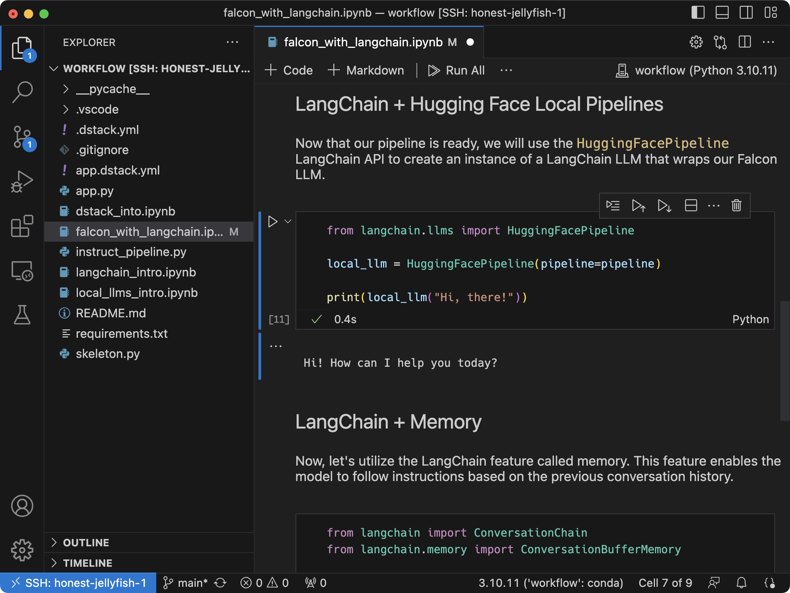

Dev environments¶
A dev environment lets you provision an instance and access it with your desktop IDE.
Define a configuration¶
First, create a YAML file in your project repo. Its name must end with .dstack.yml (e.g. .dstack.yml or dev.dstack.yml are
both acceptable).
type: dev-environment
# The name is optional, if not specified, generated randomly
name: vscode
python: "3.11"
# Uncomment to use a custom Docker image
#image: dstackai/base:py3.13-0.6-cuda-12.1
ide: vscode
# Uncomment to leverage spot instances
#spot_policy: auto
resources:
gpu: 24GB
If you don't specify your Docker image, dstack uses the base image
(pre-configured with Python, Conda, and essential CUDA drivers).
Reference
See .dstack.yml for all the options supported by dev environments, along with multiple examples.
Run a configuration¶
To run a configuration, use the dstack apply command.
$ dstack apply -f examples/.dstack.yml
# BACKEND REGION RESOURCES SPOT PRICE
1 runpod CA-MTL-1 9xCPU, 48GB, A5000:24GB yes $0.11
2 runpod EU-SE-1 9xCPU, 43GB, A5000:24GB yes $0.11
3 gcp us-west4 4xCPU, 16GB, L4:24GB yes $0.214516
Submit the run vscode? [y/n]: y
Launching `vscode`...
---> 100%
To open in VS Code Desktop, use this link:
vscode://vscode-remote/ssh-remote+vscode/workflow
Windows
On Windows, dstack works both natively and inside WSL. But, for dev environments,
it's recommended not to use dstack apply inside WSL due to a VS Code issue .
dstack apply automatically provisions an instance, uploads the contents of the repo (incl. your local uncommitted changes),
and runs the configuration.
VS Code¶
To open the dev environment in your desktop IDE, use the link from the output
(such as vscode://vscode-remote/ssh-remote+fast-moth-1/workflow).

SSH¶
Alternatively, while the CLI is attached to the run, you can connect to the dev environment via SSH:
$ ssh fast-moth-1
Manage runs¶
List runs¶
The dstack ps command lists all running jobs and their statuses.
Use --watch (or -w) to monitor the live status of runs.
Stop a run¶
Once the run exceeds the max_duration, or when you use dstack stop,
the dev environment is stopped. Use --abort or -x to stop the run abruptly.
Manage fleets¶
Creation policy¶
By default, when you run dstack apply with a dev environment, task, or service,
dstack reuses idle instances from an existing fleet.
If no idle instances matching the requirements, it automatically creates a new fleet
using backends.
To ensure dstack apply doesn't create a new fleet but reuses an existing one,
pass -R (or --reuse) to dstack apply.
$ dstack apply -R -f examples/.dstack.yml
Alternatively, set creation_policy to reuse in the run configuration.
Termination policy¶
If a fleet is created automatically, it remains idle for 5 minutes and can be reused within that time.
To change the default idle duration, set
termination_idle_time in the run configuration (e.g., to 0 or a
longer duration).
Fleets
For greater control over fleet provisioning, configuration, and lifecycle management, it is recommended to use fleets directly.
What's next?¶
Reference
See .dstack.yml for all the options supported by dev environments, along with multiple examples.